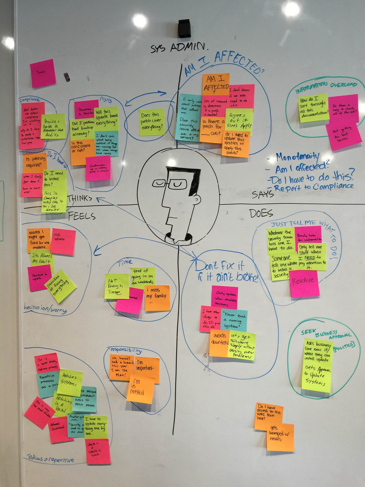
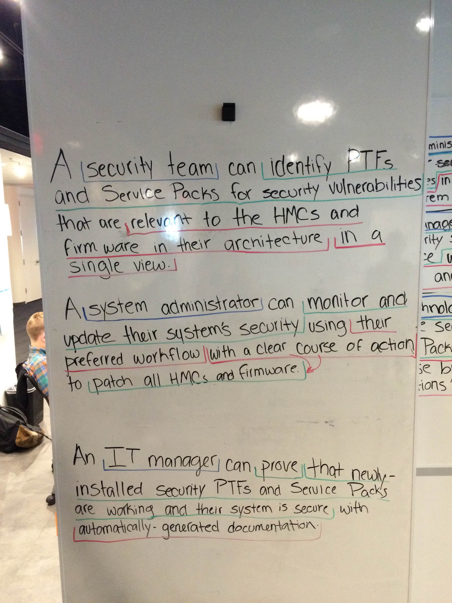
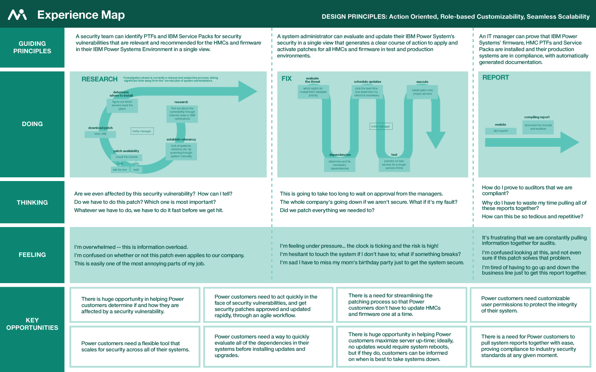
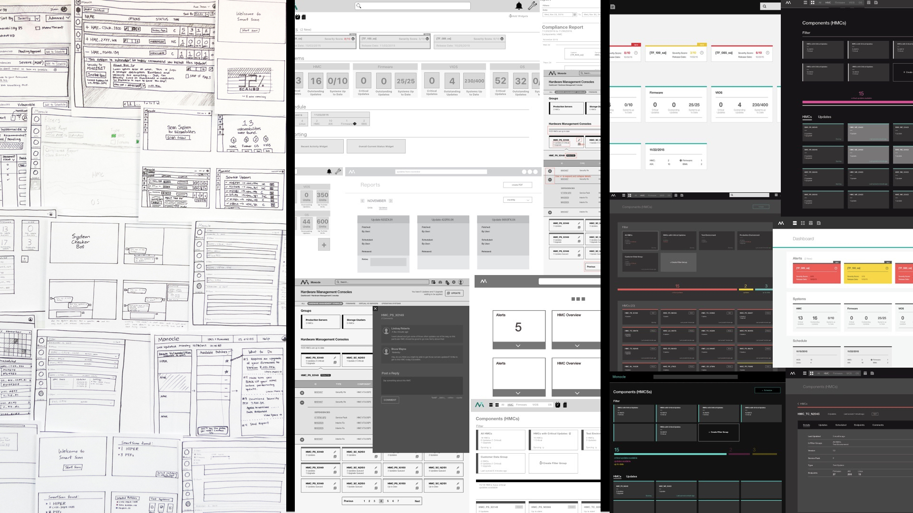
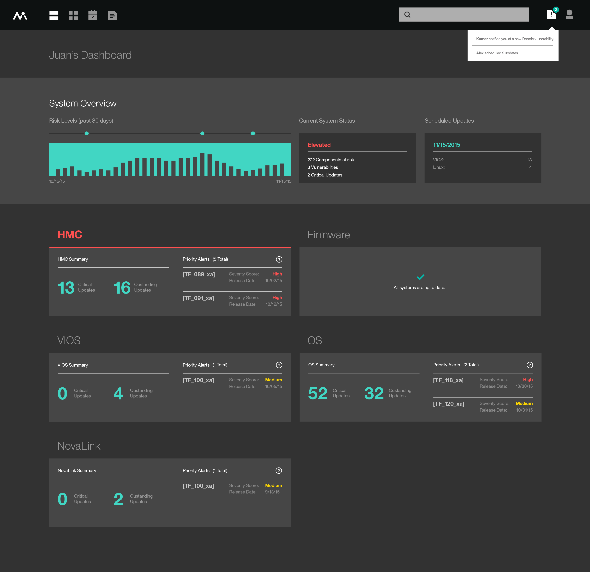
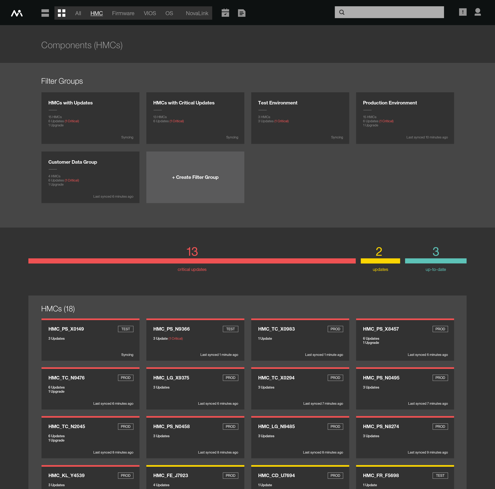
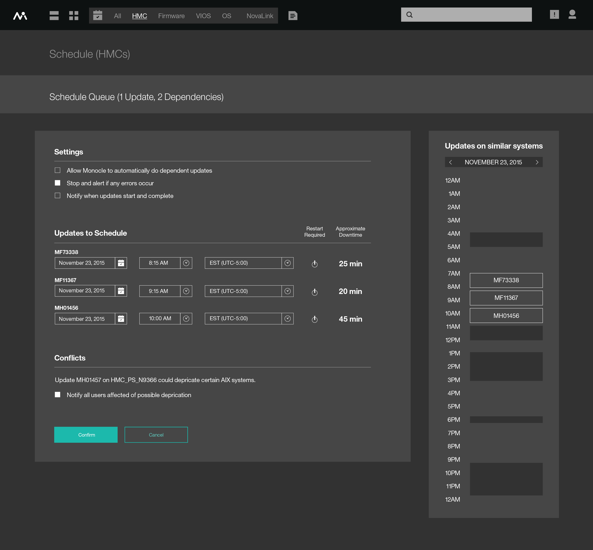
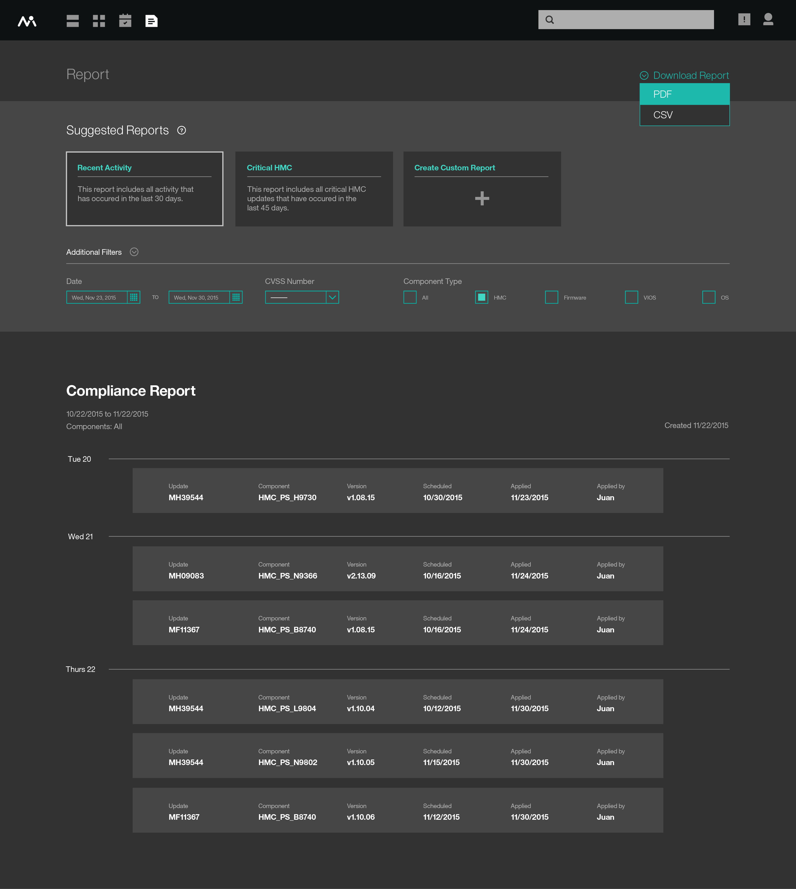

Project Monocle
Research, UX Design, Front-End Development
Summary
My first few months at IBM entailed a rigorous design experience, wrought with rapid prototyping meant to foster industry innovation and disruption. I had been placed on a small, but incredibly talented team of six to tackle a monolithic challenge. In just six short weeks, we were tasked to explore possible solutions related to patching mission critical IBM systems, and keeping the servers secure and up-to-date.
The Problem
In the many hours spent researching the problem space, our team spoke with six sponsor users globally. We discovered that the process of finding patches, determining the relevancy of fixes, and updating the systems all to maintain security is tedious, frustrating, and time consuming.
“I spent 25% of my time during the first half of the year prepping for our audit in July. That may not sound like much, but multiply that by 50 hours a week, at a manager pay rate, with all the weeks required, and that is a lot of time.”
Despite this, it is still critical that businesses today go through this process. “According to a 2016 study by the Ponemon Institute, the average cost of a data breach is about four million dollars.” - 2016 Cost of Data Breach Study: Global Analysis from Ponemon Institute

The Challenge
Throughout this project, I had two unique vantage points which turned into responsibilities for my group. With a Web Design & Development degree, I had been formally educated in server structures and networking. As a result, they relied on me to understand the problem space, and structure interviews to get to the pain points of our users.
On top of my regular responsibilities, I met with subject matter experts to create research artifacts for the team, prepared and conducted user interviews, and lead the overall user experience to help solve challenging problems.
User Research
At the core of our project is our users. We employed IBM’s Design Thinking generative techniques to formulate questions and assumptions which helped drive us forward. Some of the artifacts we created helped us understand our users (empathy maps), the process they currently take to accomplish their goals (as-is scenario), and even a set of meaningful user outcomes to help drive the direction of the project.
On a weekly basis, as we created artifacts, we aligned with our users to make sure we were accurately representing their needs.

“You guys have done such a great job of listening; we talk and you listen and next week new things are there and every time it’s gotten better. It’s been very encouraging to use my time efficiently because it’s turning out to be a product in the long run that is going to make a big difference for us and for other customers… When will the beta be ready?” - IBM Power Systems Customer (Project Monocle Sponsor User)
 Prototyping
Our team was recognized by the General Manager of IBM Design, Phil Gilbert, for our incredible agility and iteration as we built prototype after prototype. We conducted a variety of A/B tests to ensure that the designs we implemented would be a pleasant and meaningful experience for our users. Sketches, clickable prototypes, and even a fully functioning demo were all presented to our users, resulting in a polished final product that our users loved.
The Solution
We found that what our users needed was a way to be able to see their entire system environment in one view. With the Monocle Dashboard, a system admin can easily understand his system. If he needs more information, he can drill down onto a component level, where he can filter through his inventory quickly and easily based on preset and customizable configurations. From there, he can schedule an available time for the system to be taken down, and patched. Finally, we gave them a way to compile a tailored report for audits automatically.
   The Results
The success of Project Monocle led to the IBM Power Systems business unit to immediately form a full-time product team to carry Monocle forward. I was the only one from our team who remained on Project Monocle. As of fall 2016, the Monocle project has been released into a public beta, and is currently being tested by various system administrators as a proof of concept.